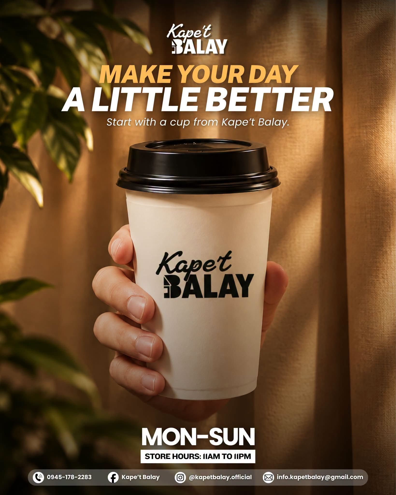
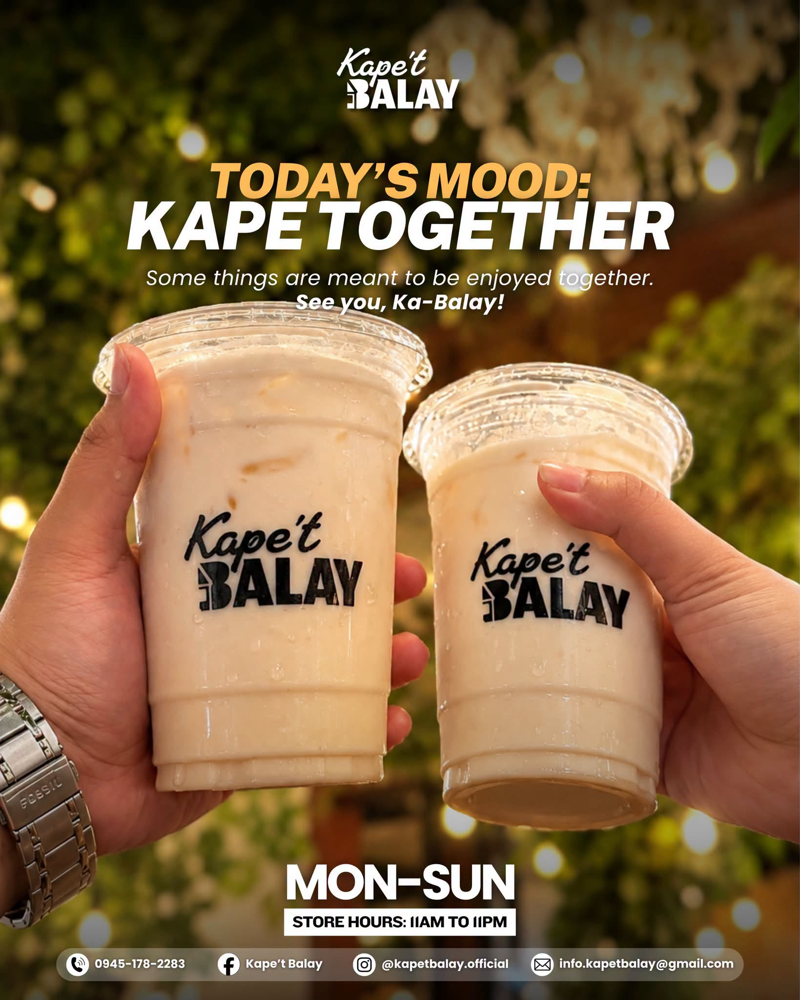

Coffee & Brews
Hot and iced espresso drinks, milk-based coffee, and our signature Kape't Balay blend.
- Spanish Latte
- Salted Caramel
- Classic Americano
- Brewed Hot Coffee
Kape't Balay is a cozy neighborhood coffee shop serving handcrafted brews, hearty rice meals, and sweet treats — made for slow mornings and good company.


Ka-Balay"Balay" means home — and that's exactly the feeling we brew into every cup. Tucked in the heart of Poblacion, Calaca, Kape't Balay is where neighbors, friends, and families gather over coffee, comfort food, and unhurried conversation.
From our first pour to our last order at 11PM, we keep things simple: good coffee, honest food, and a space that feels like a warm living room — not a rushed counter.
A peek into our cups, plates, and everyday moments at Kape't Balay.
So. Laguerta, Poblacion 1, Calaca, 4212 Batangas
Plus Code: WRP5+X8 Calaca, Batangas
Monday – Sunday: 11:00 AM – 11:00 PM
Dine-in · Curbside Pickup · Delivery